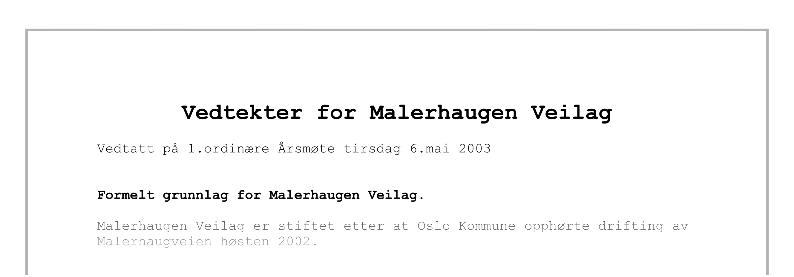

Om oss
Malerhaugen veilag er en forening for forvaltning av den private delen av Malerhuagveien. I hovedsak er ansvarsområdene brøyting, strøing og annet vedlikehold av veien.
Virkeområde og medlemmer
Vedtekter
Her finner du våre vedtekter:

Årsregnskap
Malerhaugen veilags årsregnskap 2019/2020 kan lastes ned her.
Malerhaugen veilags årsregnskap 2020/2021 kan lastes ned her.
Årsmøte 2021
Ordinært årsmøte ble avholdt kl 18:00 17 juni 2021. Protokoll for årsmøte kan lastes ned her. Signert utgave er arkivert.
Kontaktinformasjon
Malerhaugveien, Oslo
Org.nr: 923420762